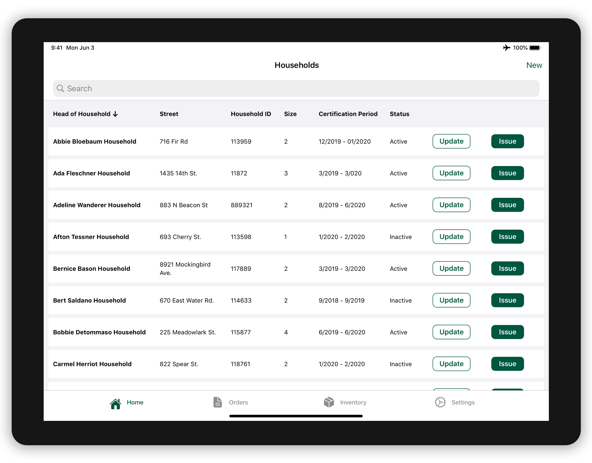

<!DOCTYPE html>
<html>

<head>
	<title>Emily Porat | Food Management System</title>
	<link rel="stylesheet" type="text/css" href="styles/global.css">
	<link rel="stylesheet" type="text/css" href="styles/global-mobile.css">
	<link rel="stylesheet" type="text/css" href="styles/nav.css">
	<link rel="stylesheet" type="text/css" href="styles/projects.css">
	<script src="https://ajax.googleapis.com/ajax/libs/jquery/1.9.1/jquery.min.js"></script>
	<link rel="shortcut icon" type="image/x-icon" href="pics/favicon.ico" />
	<link rel="stylesheet" href="https://cdnjs.cloudflare.com/ajax/libs/font-awesome/4.7.0/css/font-awesome.min.css">
	<!-- Global site tag (gtag.js) - Google Analytics -->
	<script async src="https://www.googletagmanager.com/gtag/js?id=UA-119412150-1"></script>
	<script>
		window.dataLayer = window.dataLayer || [];
		function gtag(){dataLayer.push(arguments);}
		gtag('js', new Date());

		gtag('config', 'UA-119412150-1');

      // load other reused files
      $(function() {
      	$('#nav').load('http://emilyporat.com/nav.html');
      	$('#footer').load('http://emilyporat.com/footer.html');
      });
  </script>
</head>

</html>
<body class="preload">
	<meta name="viewport" content="width=device-width">
	<div id="nav"></div>
	<div id="arrow-up" onclick="slideUp()"><i class="fa fa-angle-up"></i></div>	

	<div class="title-wrapper animate-reveal animate-first">
		<div class="title">
			<div class="header">Food Management System</div>
			<div class="last"><div class="divider"></div></div>
			<div class="subheader-2">Fall 2019 - Spring 2020 • Deloitte Digital</div>
		</div>
	</div>

	

	<div class="panel context">
		<div class="context-summary">
			<div class="subheader-2">Context</div>
			<p style="font-size: 1.3em; color: black">
				I redesigned key features of the interface that government workers use to provide food to nearly 100,000 low-income individuals.
			<p>
				My team was tasked with replacing a federal aid program's legacy inventory management system with a Salesforce web application and an accompanying iOS mobile iPad app. The system is scheduled to launch Summer 2020.
			</p>
			<p>
				Sophisticated applications can be built quickly by using the wide range of 'out of the box' Salesforce components. However, this particular system has many complex requirements, and custom-designed interfaces were required in three major areas: customer data management, inventory management, and the point of sale (POS) checkout system.
			</p>
			<p><i>Please note: some data fields and details are omitted due to restrictions surrounding government contracting.</i></p>
		</div>

		<div class="context-specifics">
			<div class="subheader-2">Team</div>
			<div class="context-description">I was one of two designers on a large team of 25+ practitioners.</div>
			<div class="subheader-2">Skills</div> 
			<div class="context-description">User Research, Journey Mapping, Wireframing, Prototyping, Visual Design, Information Architecture, User Flows</div>
			<div class="subheader-2">Tools</div><div class="context-description">Sketch, InVision, Abstract, PowerPoint</div>
		</div>
	</div>

	<div class="panel gray">
		<div class="subheader-3 left">Table of Contents</div>
			<div class="body right">
				<ul class="toc_list">
					<li><a href="#summary">Project Summary</a></li>
 					<li><a href="#process">Process</a></li>
 					<li><a href="#research">Research Insights</a></li>
 					<li><a href="#web-ia">Web IA</a></li>
 					<li><a href="#web-design">Web Design</a></li>
 						<ul>
 							<li><a href="#web-design-nav-tree">Navigation & Limits</a></li>
 							<li><a href="#web-design-errors">Errors</a></li>
 						</ul>
 					<li><a href="#mobile-ia">Mobile IA</a></li>
 					<li><a href="#mobile-design">Mobile Design</a></li>
 						<ul>
 							<li><a href="#mobile-design-1">Select a Household</a></li>
 							<li><a href="#mobile-design-2">Browse & Select Items</a></li>
 							<li><a href="#mobile-design-3">Review Order & Submit</a></li>
 							<li><a href="#mobile-design-4">View Order History & Details</a></li>
 						</ul>
 					<li><a href="#reflection">Reflection</a></li>
 				</ul>
			</div>
	</div>

	<div class="panel" id="summary">
		<div class="subheader-3 left">Project Summary</div>
			<div class="body right">
				<b class="subheader-4">Who</b>
				<p>
					Our users are government employees, but they operate independently of their parent agency. They are embedded in communities in over 100 organizations across the country, and each site has unique processes, attitudes, and perspectives. That said, every user we spoke with shared one key trait: they cared deeply about helping feed those in need.
				</p>

				<div class="space"></div>

				<b class="subheader-4">What & Why</b>
				<p>
					The legacy system was long overdue for an upgrade. It had a number of inefficiencies that forced users to change their business processes to match the system. For example, some organizations ordered their physical stores around the (un-sortable) catalog provided in the legacy system to make data entry easier.
				</p>
				<p>
					One of my focus areas was designing an intuitive POS system that can serve every user well. Designing this interface was complex for a few reasons (see <a href="#research" style="color: #6EA3E9">Research Insights</a> section below for more):
					<ul>
						<li>Technical limitations - Salesforce isn't meant to be a POS, and our users are not using touchscreen devices (for the web channel). The most difficult technical requirement was handling barcode scanning.</li>
						<li>Government-imposed limits on each food category - these limits have to be displayed and monitored so that users don't exceed them.</li>
						<li>Volume of Data - There is simply a lot of content to fit on one screen. Building a solid hierarchy was challenging given all the data requirements.</li>
					</ul>
				</p>
				
				<div class="space"></div>

				<b class="subheader-4">Outcome</b>
				<p>
					Ultimately, the team was able to build a checkout experience that is efficient, flexible, adaptable, and significantly better than the legacy system.
					
					<p>The replacement system improves the user experience in three key areas:
					<ul>
						<li>Efficiency - the system provides accelerators and shortcuts so that users can tailor their workflow to fit their needs.</li>
						<li>Flexibility - the primary navigation systems allow users to move freely within and between the checkout modes, unlike the restrictive function-key/keyboard based navigation in the legacy system.</li>
						<li>Context - User profiles determine who sees what in the system, so irrelevant data is filtered out, reducing cognitive load.</li>
					</ul>
					</p>
				</p>
			</div>
	</div>

	<div class="panel dark">
		
	</div>

	<div class="panel dark" style="background-color: white">
		
	</div>

	<div class="panel gray" id="process">
		<div class="subheader-3 left">Process</div>
			<div class="body right">
				<b class="subheader-4">Discover</b>
				<div class="subheader-2">Week 1-2</div>
				<p>My design lead went on 3 field visits to conduct contextual inquiry and answer our highest-priority questions.</p>
				
				<div class="space"></div>

				<b class="subheader-4">Define</b>
				<div class="subheader-2">Week 3-4 & Throughout</div>
				<p>I analyzed my design lead's field notes and built several deliverables, including a research report, executive summary, and journey map. Broader product requirements had already been defined through the Statement of Work, and more granular definition continued as we fleshed out the requirements for each system component.</p>
				
				<div class="space"></div>

				<b class="subheader-4">Design, Develop, Demo, Repeat</b>
				<div class="subheader-2">Every 3 weeks for 9 months</div>
				<p>Our project was broken into 3-week sprints. In a typical sprint, I design the MVP interface(s) that would be developed in the following sprint while also designing enhancements for existing features. The team built the Web interface first, and then transitioned to Mobile.</p>
				
				<p>This was a 1.0 product, so we often designed and built entire flows in just a few weeks. Our process was highly iterative and fast-paced.</p>
			</div>
	</div>

	<div class="panel" id="research">
		<div class="subheader-3 left">Research Insights</div>
		<div class="body right">
		
			<div>Because research took place 4 months late, its purpose shifted from open-ended exploration to confirmation: validating the assumptions we'd already acted on and tweaking requirements that had already been defined. It wasn't an ideal situation - but better late than never!</div>
			<p>After my design lead returned from the site visits, I took 2 weeks to sift through all the notes, build out a wiki-style report with quotes and pictures, and condense that report into a PowerPoint presentation for the client. Below are some of the most important insights we confirmed and learned about the shopping experience.</p>
		
			
		
			<div class="space"></div>

			<div class="subheader-4">Flexibility</div>
				<p>Participating organizations use two different methods for checkout: manual and store concept. At manual locations, program staff step through each food category and enter the units selected manually. In the grocery store model, a customer shops in a warehouse, following an approved grocery list, and a staff member checks them out using a barcode scanner.</p>

			<div class="space"></div>

			<div class="subheader-4">Environment</div>
				<p>Users have to constantly shift their focus between the physical shopping cart, customer, screen, barcode scanner, etc. Additionally, some stores don't have much, if any counter space, which makes using the mouse very undesirable. Checkout is a high pressure situation - staff members are trying to get through each customer's order as quickly as possible</p>

			<div class="space"></div>

			<div class="subheader-4">User Error</div>
				<p>It's easy to make mistakes in this rapid-fire environment. Users may encounter several possible errors - some people would rather avoid them, while some prefer to cause them and get feedback. The current system uses audio cues (buzz/beep) to indicate errors when checking out.</p>

			<div class="space"></div>

			<div class="subheader-4">Tech Literacy</div>
				<p>This is an enterprise application - our users have different levels of computer proficiency. They are used to a function key based navigation legacy system; moving to point & click alone will be jarring.</p>

			<div class="space"></div>

			<div class="subheader-4">Connectivity</div>
				<p>Some organizations have unreliable internet access and some have none at all. A primary purpose of the mobile app is to support those groups with an offline mode. This capability brings a host of technical challenges surrounding data syncing and validity.</p>

			<div class="space"></div>

			<p>
				To supplement the executive summary, I also built out journey maps for the key processes. Here's the map for the shopping experience:
			</p>
		</div>
	</div>

	<div class="panel dark">
		
	</div>

	<div class="panel" id="web-ia">
		<div class="subheader-3 left">Web IA</div>
		<div class="body right">
			By the time I joined the team, the top-level IA had already been defined. My primary role with the Web IA was to document, analyze, and work with the team to ensure it made as much sense as possible given the technical constraints. I built out documentation covering the platform considerations, a comparison of the legacy vs new systems, a deep dive of the new IA, and a summary of improvements and challenges.
			
			
			<p>These were some of the primary improvements:</p>
			
			<div class="subheader-4">Navigation & Search</div> 
				<p>The legacy system only supports keyboard navigation, so users need to either recall how they had navigated to a certain page or continue to hit the return or exit options to see how the pages are related. There is only one path to most pages, and no global or local search capabilities.</p>
				
				<p>In the new system, global navigation is provided through the app launcher, and users can always see local app-level navigation via tabs. All pages provide links to contextually related content, global search is provided, and both keyboard and point & click navigation is supported.</p>
			
			<div class="space"></div>
			
			<div class="subheader-4">Organization</div>
				<p>The legacy system presents all menu items to all users so that people with multiple roles can work within many areas of the system. This requires users to ignore the menu items and tasks that are unrelated to their job function.</p>
			
				<p>In the new system, user permissions dictate what modules are shown to each user. Users will only access areas of the system that are pertinent to their role. This cuts down on unnecessary information and provides a simpler, customized experience.</p>

			<div class="space"></div>
			
			<div class="subheader-4">Labeling</div>
				<p>The legacy system uses inconsistent and unclear language; many users did not know what certain terms meant and consequentially did not use the associated feature. Users must learn the technical terminology to fully understand how to use the system.</p>
			
				<p>The new system uses colloquial, human-friendly language with which users are familiar. Terminology will be less of a barrier to understand and use the system.</p>

			
			<p>
				While the team solved many important architecture problems, there are still plenty of challenges associated with the new IA. As you can see in the sitemap above, the organizational structure is still fairly complex. Modernizing a legacy system will always present challenges: in this case, inline links add more paths and complexity, Salesforce temporary tabs are an unfamiliar concept for many, and technical data does not cater to every user. Read on below for some of the remaining challenges I identified.
			</p>

			<div class="space"></div>
			
			<div class="subheader-4">More Paths, More Complexity</div> 
				<p>Because the system provides many inline links and buttons to other pages, there are inherently more paths, options, and ways for users to get lost. However, the new system minimizes this complexity by presenting all key tasks within 4 clicks (unlike the legacy system, where, for example, it takes 9 steps to reach the shopping cart page.)
				</p>
			<br>

			<div class="space"></div>
			
			<div class="subheader-4">Dynamic Navigation</div>
				<p>When a user clicks a link to a record, a temporary tab appears, which appears to the right of the permanent local menu items. Closing the tab redirects to the right-most tab rather than the parent page, which could disorient users. This is a standard Salesforce system pattern - at the least, its consistency throughout will help with learnability.
				</p>
			<br>

			<div class="space"></div>
			
			<div class="subheader-4">Extraneous Content</div>
				<p>Some pages display required fields that are blank, or may not make sense to the average user, but are required for the record to exist from a technical architecture perspective. In most cases, the most important fields are closer to the top of the page so users can focus on what they actually care about (and ignore the rest).
				</p>
			<br>
		</div>
	</div>

	<div class="panel gray" id="web-design">
		<div class="subheader-3 left">Web Design Overview</div>
		<div class="body right">
			<div class="subheader-4">How it Works</div>
				<p>The shopping interface combines the functionality of several legacy interfaces in to one streamlined process. It provides flexibility transition between organizational models and workflows.</p>
				
				<p>There are two business processes for checking customers out: store concept and manual (explained above, in <a href="#research" style="color: #6EA3E9">Research Insights</a>). Users are assigned a primary model, but can switch if needed.</p>

				<p>Manual mode provides one simple table-centric interface, and the store mode provides two interfaces for data entry: Search and QuickScan. Search is meant for users who prefer to find items by searching, sorting, and filtering. Users can still scan items in search mode.</p>

				<p>QuickScan is a lightweight interface for users who primarily rely on barcode scanning, and only touch the keyboard to change an item's quantity. Users navigate using tab / shift-tab to move between the barcode or quantity fields. Users can always switch between interfaces with the dropdown in the top right corner.</p>
			
			<div class="space"></div>

			<div class="subheader-4">Why it Works</div>
				<div class="subheader-2" style="margin-top: 3%">Accuracy & Trust</div>
				<ul>
					<li>Ability to review a transaction before submitting</li>
					<li>Human-friendly error prevention</li>
					<li>Consistent visibility into customer limits</li>
				</ul>
				
				<div class="subheader-2">Efficiency in High-Pressure Situations</div>
				<ul>
					<li>Ability to switch between scanning and adding items manually</li>
					<li>Hotkeys / shortcuts provided to minimize switching between keyboard / mouse input</li>
				</ul>
				
				<div class="subheader-2">Flexibility to Support Different Business Processes</div>
				<ul>
					<li>Two places from which to begin the transaction based on user role</li>
					<li>Ability to search, sort, and filter items based on the checkout order</li>
				</ul>
			
				<div class="subheader-2">Recognition Over Recall</div>
				<ul>
					<li>Pre-populating data and providing dropdown lists when applicable</li>
				</ul>
			
			<div class="space"></div>

			<div class="subheader-4">Limitations</div>
				<p>Barcode scanning was an essential and technically complex requirement. In an ideal world, the system would automatically sense when an item is scanned and add the item to the shopping cart, but it was impossible to build that functionality without knowing the scanner type of every organization and configuring the settings appropriately. To ensure barcode scans were recognized as input, we introduced the 'Scanner Mode' toggle.</p>
		</div>
	</div>

	<div class="panel dark">
		
	</div>

	<div class="panel" id="web-design-nav-tree">
		<div class="subheader-3 left">Navigation & Food Limits</div>
		<div class="body right">
			<div class="subheader-4">How it Works</div>
				<p>There are government-imposed limits on each food category. This is one of the key differences between this system and any commercial POS. </p>
				<p>Users see an expandable, scrollable menu listing the total limit, selected, and remaining for each category and sub-category. Remaining is highlighted in the badge component as this is the most important piece of data for a user to see quickly. These limits are inherently hierarchical (Category > Sub Category > Product), with different limits at each level. For example, Juice nests under Fruit, which nests under Fruits & Vegetables. We align with this mental model by visually indenting sub-categories when the accordion is expanded.</p>
			
			
			
			<div class="space"></div>
			
			<div class="subheader-4">Why it Works</div>
				<p>
					This combined navigation and status component provides consistent visibility into customer limits and current status. Users can choose to scroll through the entire list, or move category-by-category. The accordion component accommodates the data - there are at most 5 sub-categories to display.
				</p>

			<div class="space"></div>
			
			<div class="subheader-4">Limitations</div>
				<p>Because there are many categories, if one section is expanded, users lose sight of some of the lower categories.</p>
		</div>
	</div>

	<div class="panel gray" id="web-design-errors">
		<div class="subheader-3 left">Errors</div>
		<div class="body right">
			<div class="subheader-4">How it Works</div>
				<p>Given the complex business logic surrounding limitations (category limits, inventory limits, etc.), we had to consider the error management strategy.</p>
				<p>Different errors trigger tailored error messages. These error messages are accompanied by a buzzer sound, since not all users are going to be looking at the screen as they scan items. We allow users to dismiss errors and return to the interface to resolve them there (rather than barring users from committing the error at all). We safeguard invalid data entry by showing inline error messages for unresolved items (for inventory errors), error notifications on the category tree (for category limit errors), and an error summary if the user tries to submit the transaction.</p>

			<div class="space"></div>

			<div class="subheader-4">Why it Works</div>
				<div>
					<p>This multi-tiered warning system protects the user from submitting orders with invalid data. It also provides flexibility - users can override certain (but not all) errors and choose when they want to address the errors. This accommodates the myriad of different work-styles our users have.</p>
				</div>
				
			<div class="space"></div>

			<div class="subheader-4">Limitations</div>
				<p>Users can't sort the shopping cart by category, which would be helpful for correcting category-limit errors. A consideration for future research would be to investigate if this is a user need and incorporate a category filter for the cart.</p>
		</div>
	</div>

	<div class="panel dark">
		
	</div>

	<div class="panel" id="mobile-ia">
		<div class="subheader-3 left">Mobile IA</div>
		<div class="body right">
			The mobile architecture strategy centered around the need to keep the mobile experience lightweight. The mobile app is designed for pop-up events that cater to participants who live far from the warehouses that serve most of the aid program participants. These events typically service 10-40 households.
			<p>Issuing food to participants can be complicated and challenging at times. Customers are human beings with frustrations, insecurities, and preferences - plus, they likely have been waiting a long time to collect their food. Users of the mobile app have a small set number of tasks they need to accomplish quickly and efficiently. The IA supports that need by keeping the app simple - grouping primary people-centric tasks and minimizing paths and path lengths for every task.</p>
			<p>Every task flow in the mobile app can be accomplished within 4 levels, and no task has more than 2 access points:</p>

			<div class="space"></div>
			<div class="subheader-4">(Re)Certify Household</div>
			<div class="subheader-2">Paths: 1 / Levels: 2</div>
			<p>In the physical world, customers arrive, check-in, and wait their turn. Staff members must verify that the household is a certified participant in the program before issuing any food. This primary task is situated within the Home page.</p>

			<div class="space"></div>
			<div class="subheader-4">Create New Household</div>
			<div class="subheader-2">Paths: 1 / Levels: 2</div>
			<p>If the customer is new to the program, their profile needs to be created. Users expect to be able to add a record to an interactive list from the list view itself, so the 'New' call-to-action is also situated within the Home page.</p>

			<div class="space"></div>
			<div class="subheader-4">Issue Food</div>
			<div class="subheader-2">Paths: 2 / Levels: 4</div>
			<p>After certification or creation, staff members immediately initiate the shopping process for the household.</p>

			<div class="space"></div>
			<div class="subheader-4">View Orders</div>
			<div class="subheader-2">Paths: 1 / Levels: 2</div>
			<p>After the household's order is finalized and submitted, users can view it on the Orders page, which provides a record of past transactions (rather than a place to initiate new transactions). Creating this distinction aligns with the physical reality - the issuance process revolves around the households; whereas editing, voiding, or viewing history are transactional processes that are done after customer have been issued to.</p>

			<div class="space"></div>
			<div class="subheader-4">View Inventory</div>
			<div class="subheader-2">Paths: 1 / Levels: 1</div>
			<p>The Inventory page is simply used as a reference list. It is connected to issuance, but not any particular household. It gives users a chance to quickly check the inventory without having to initiate any transaction.</p>
			</div>
	</div>

	<div class="panel dark">
		
	</div>

	<div class="panel" id="mobile-design">
		<div class="subheader-3 left">Mobile Design</div>
		<div class="body right">
			<div>The mobile application is significantly less complex than the Web UI because its purpose, scope, and user group are much narrower. It was also built (primarily) using native iOS design patterns and components rather than Salesforce mobile components, so there were different (and fewer) technical constraints. Read on to learn more about the primary flow:</div>
			<ul>
				<li>Select a household</li>
				<li>Browse categories & select items</li>
				<li>Review the order & submit</li>
				<li>View order history & details</li>
			</ul>
		</div>
	</div>

	<div class="panel dark">
		
	</div>

	<div class="panel" id="mobile-design-1">
		<div class="subheader-3 left">Select a Household</div>
		<div class="body right">
			<div>
				The home screen displays every household in a user's organization. Originally, we considered conditionally showing the "Issue" button only if the household could be issued to, but the logic to determine that depended on too many factors. We decided that hiding the Issue button would be more of a distraction than an aid. Instead, we trigger an alert explaining why users can't issue after tapping the button. The established business process is to check a household's certification <i>before</i> issuing, so the scenario where the household can't be issued to should be quite rare.
			</div>
			
			
			<div class="space"></div>
			<div class="subheader-4">Enhancements</div>
				<ul>
					<li>The Status field is independent of the Certification Period field. Showing both fields clutter the UI - a proposed enhancement is to combine them into one Certification Status encapsulating both fields.</li>
					<li>This household list could be very long for some of the larger organizations. To make browsing (rather than searching) more viable, we considered implementing a check-in / queue system for participants so that this page could be more of a checklist. On the simpler end, we could provide a way to filter the view by last issuance date so users could just see the households that haven't received their food yet.</li>
				</ul>
		</div>
	</div>

	<div class="panel gray" id="mobile-design-2">
		<div class="subheader-3 left">Browse & Select</div>
		<div class="body right">

			<div>
				There are several primary item selection patterns we observed through our research: 
				<ul>
					<li>Follow a prescribed grocery list</li> 
					<li>Walk through the entire system to see what's in stock</li>
					<li>Choose a few specific items</li> 
				</ul>
				I also considered the amount and structure of the data:
				<ul>
					<li>Every category except Fruits & Vegetables has fewer than 35 unique products; Vegetables has 65.</li>
					<li>5 of 11 categories have sub-categories</li>
					<li>Categories, sub-categories, and products are subject to change on a quarterly basis</li>
				</ul>

				<p>The goal for these screens was to provide flexibility to adapt to every use case.</p>
				
				

				<div class="subheader-4">Category Overview</div>
				<p>
					The categories page is designed with simplicity, consistency, and select-ability in mind. The interface is meant to be clean and distraction-free. We know that not every household will want to 'fill up' their limits. Some households do partial issuance on a weekly basis, and some simply don't have the goal of taking every single item available to them, simply due to personal preference. Because of this, categories are not visually differentiate based on number of remaining items.
				</p>

				<div class="space"></div>

				<div class="subheader-4">Materials List</div>
				<p>The hierarchy is structured to support eye tracking (scan-ability), proximity of related information, and simplicity. Everyone knows the names of food, but not everyone knows the material codes associated with every item. Sorting alphabetically caters to the lowest common denominator. The interactive elements on this screen are purposefully limited to keep it simple.</p>
			</div>
			
			<div class="space"></div>

			<div class="subheader-4">Enhancements</div>
				<ul>
					<li>The uniform Categories interface makes it difficult to differentiate between states (complete / in progress / not started) and understand progress. To clarify status & progress, we could implement a user controlled checklist, which would make the screen more easily scan-able by enabling users to quickly differentiate between categories in different states.</li>
					<li>Constraining the ordering and filtering ability simplifies the UI, but is limiting. To provide more flexibility for different use cases and preferences, adding sort/filter ability is recommended</li>
				</ul>
		</div>
	</div>

	<div class="panel" id="mobile-design-3">
		<div class="subheader-3 left">Review & Submit</div>
		<div class="body right">
			<div>
				The review screen is an essential piece of any multi-step process. It gives the user the opportunity to ensure that the customer is receiving exactly what they asked for. Items are organized by category, and the categories sorted alphabetically, mirroring the Categories page. The user can access this review screen from any screen in the shopping flow, making it easy for users to check in as they go. This screen is purposefully read-only to simplify the interface.
			</div>
			<p>The success screen is another essential way of providing system status. We provide two paths forward: print the receipt (a standard step in their business process) or return to households (to issue to the next person in line).</p>
			
			
			<div class="space"></div>
			<div class="subheader-4">Enhancements</div>
				<ul>
					<li>The read-only order summary is simple, but limiting. The ability to change quantity from the review screen could accelerate the issuance process.</li>
					<li>There is no way to return to the transaction to edit it once it's been submitted because it is a rare use case. However, pulling in the ability to edit a transaction would help users who need to make minor corrections to an order do so much faster than deleting and re-doing the entire transaction.</li>
				</ul>
		</div>
	</div>

	<div class="panel gray" id="mobile-design-4">
		<div class="subheader-3 left">Order History</div>
		<div class="body right">
			<div>
				A user views past orders for two main reasons: a participant wants to know what they got in a previous month, or the user herself wants to review the day's orders for accuracy. Enabling search by household was a no-brainer. The other key feature on this screen is the ability to filter by current location. 
			</div>
			<p>The details screen is intentionally similar to the review screen. This provides consistency and familiarity. As mentioned, users cannot edit transactions, but they can void them or print them.</p>
			
			
			
		</div>
	</div>

	<div class="panel" id="reflection">
		<div class="subheader-3 left">Reflection</div>
		<div class="body right">
			<div>
			This was my first real-world consulting project. It had a very real budget, timeline, and pre-defined requirements. While I grew a lot as a designer, I also grew as a consultant and teammate; an integral part of any project is learning how to work with functional and technical teammates to assess level of effort, technical complexity, and overall feasibility of the designs. Because, at the end of the day, a pixel-perfect design is nothing without client buy-in and working code. Here are some of my key takeaways:
				
				<div class="space"></div>

				<div class="subheader-4">"Good Enough"</div>
				<p>There's always a spectrum of what's possible and never enough time, resources, or budget to get everything 100% right. The trick is to find the "good enough" point - to pick our battles, understand the user's needs and priorities, and do what we can to serve those needs while working within every other constraint.</p>
				
				

				<div class="subheader-4">Atomic Design</div>
				<p>Coming into this project, I had no experience with the Salesforce Lightning Design System or iOS Human Interface Guidelines. In fact, coming out of college, I had very little experience using existing platform design systems at all. I gained an appreciation for building, maintaining, and customizing component libraries, and the importance of atomic design.</p>

				<div class="space"></div>
				
				<div class="subheader-4">Accessibility</div>
				<p>Government systems are required to be ADA compliant. A lot of the WCAG guidelines apply to how the code is structured, but the core principles of Perceivable, Operable, Understandable, and Robust are simply good design. I gained a baseline understanding of these principles through my work on this project, and a tremendous amount of empathy by conducting some of the accessibility testing for the mobile app.</p>
			
			<div class="space"></div>
				
            <div style="padding: 5%; background-color: #E7F4FD">
                <div class="subheader-4">Testimonials</div>		
                <div class="last"><p class="divider" style="background-color: black; width: 100%; margin-top: 5px; margin-bottom: 5px"></p></div>
                <p>"[Team Member] and I have frequently shared notes about how impressed we were by what you learned in a short time. I remember that meeting where you walked us through your wireframes for [feature] in mid-January. We were both impressed by your rationale for various UX choices. You have really developed a valuable skill blending the UI/UX craft with the Salesforce and iOS platforms." - Senior Manager, Deloitte Digital</p>

                <p>"I’ve learned so much from you from the unique design perspective you brought to the team, and I am more than positive you’ll make a huge impact wherever you go." - Functional Analyst, Deloitte Digital</p>
            </div> 
			</div>
						
		</div>
	</div>

<div id="projects" class="animate-reveal animate-third margin-medium">
	<div class="header">View More Projects</div>
	<!-- Featured project -->
	<a href="rsvpd.html">
	<div class="section">
		
		<div class="project-info">
			<div class="proj-header">RSVP'd</div>
			<div class="subheader-4">Mobile app that helps event planners predict attendance by providing predictability, motivation, and accountability.</div>
			<div class="subheader-2" >FALL 2018 • CARNEGIE MELLON</div>
			<div class="tags">
				<div class="tag">UX</div>
				<div class="tag">visual design</div>
				<div class="tag">mobile design</div>
				<div class="tag">prototype</div>
			</div>
		</div>
	</div>
	</a>

	<!-- Featured project -->
	<a href="justharvest.html">
	<div class="section">
		
		<div class="project-info">
			<div class="proj-header">Community Table</div>
			<div class="subheader-4">Service solution that mutually benefits the nonprofit Just Harvest and the food insecure individuals it serves.</div>
			<div class="subheader-2" >SPRING 2019 • CARNEGIE MELLON</div>
			<div class="tags">
				<div class="tag">service design</div>
				<div class="tag">nonprofit</div>
			</div>
		</div>
	</div>
	</a>

	<!-- Featured project -->
	<a href="l&d.html">
	<div class="section">
		
		<div class="project-info">
			<div class="proj-header">Learning & Development Portal</div>
			<div class="subheader-4">Website through which employees request continuing education programs.</div>
			<div class="subheader-2">SUMMER 2018 • DELOITTE DIGITAL</div>
			<div class="tags">
				<div class="tag">UX</div>
				<div class="tag">user research</div>
				<div class="tag">web design</div>
				<div class="tag">prototype</div>
			</div>
		</div>
	</div>
	</a>
</div>

	</div>
	<div id="footer"></div>
</meta>
</body>

<script src="js/general.js"></script>

</html>
